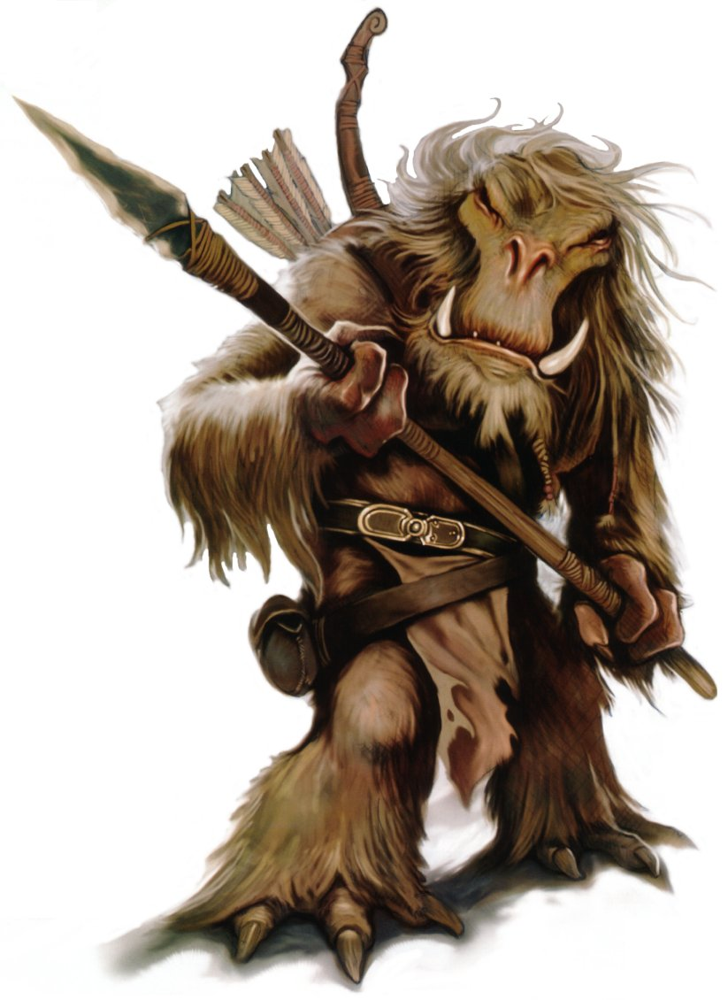

Whiphid
whiphid
Special Abilities: Whiphids begin the game with one rank in Survival. They still may not train Survival above rank 2 during character creation.
Hardy Survivalist: A Whiphid adds automatic [1 Success] to Survival checks and can survive for several weeks without food thanks to reserve blubber.
Tusks: When a Whiphid makes a Brawl check to deal damage to an opponent, he deals +2 damage, has a Critical Rating of 4, and the Vicious 1 quality.
Large, imposing, and hairy, most Whiphids have the mental resolve and determination to back up their imposing physical appearance. Perfectly at home in cold climates and wild environs, many Whiphids have gained fame as bounty hunters, mercenaries, and bodyguards. However, Whiphids are not inherently violent or aggressive; rather, their way of life necessitates a level of physical prowess, especially when hunting big game native to their planet of Toola.
Whiphids loom over most other sentients, averaging two meters in height. Most of a Whiphid’s body is covered in long, shaggy fur, most typically brown in coloration. Whiphid genders are difficult for most outsiders to discern. All Whiphids are powerfully built and possess long, sharp tusks that extend upward from the massive bottom jaws of their hairless faces. Their hands contain two fingers and a thumb, all of which end in deadly claws. As an adaptation to their frozen world, Whiphids naturally develop thicker hair and a dense layer of blubber while living in cold temperatures. Many Whiphids living off-planet therefore appear slightly thinner and less shaggy than their homeworld counterparts, although given adequate exposure to a colder climate, Whiphids regain both the fat and hair. Barring death by illness, conflict, or accident, Whiphids live up to almost two and a half centuries. Given their considerable lifespans, elder Whiphids are sure to have amassed considerable wisdom and experience from their long years.
Whiphids on their homeworld of Toola live in a nomadic hunting style. Whiphids are less invested in strict rules of familial or dynastic structure than many other species, and so Whiphids instead build small tribes of around six to twenty based around the specific needs of the individuals who comprise the group. These groups wander the planet hunting game during the winter and typically construct more stationary encampments during the summer. The leader of a tribe is referred to as a Spearmaster, and is chosen by the group, often based upon age and experience. A tribe only lasts as long as it is successful. Groups facing irreconcilable differences between members or simple stagnation often voluntarily disband, with each individual or subgroup seeking to join a different tribe. Tribes frequently accept new members, as this slow and constant migration between groups is to be expected. Though Whiphids are familiar with the technology common across the galaxy at large, those who remain on their home planet are usually satisfied with the older tools and traditions that have served them well through the ages. Outsiders are often startled to discover Whiphids still using sledges instead of airspeeders and spears instead of blasters, but Whiphids see no need to fix what isn’t broken.
Historically, Whiphid tribes tend to avoid conflict with each other. Indeed, tribes often cooperate for the purposes of particularly large hunts before going their separate ways. Sometimes, tribes gather around Toola’s hot springs to trade. Otherwise, groups generally remain autonomous, rarely interacting with outsiders. While disagreements and even decades-long feuds are not unheard of between individuals, they rarely extend beyond the two Whiphids in question, and only periodically do they boil over into violence more harmful than scuffles or brawls. This pattern stems from a combination of natural behavior and the expectations enforced by Whiphid elders and Spearmasters. To waste energy fighting private conflicts endangers the tribe, and Toola’s harsh environment does not permit such selfishness. Those who fail to adhere to these standards are often shunned. Some of those exiled make their way offworld and become entangled in criminal operations, but just as many Whiphids leave voluntarily to fulfill some desire or dream that simply cannot be attained by one living the rustic lifestyle found on Toola.
The planet Toola is located in the Kaelta system, in the Nilgaard sector of the Outer Rim. A standard day on Toola lasts about twenty-three standard hours, and the world’s orbital rotation consists of 425 local days. For a majority of the year, the planet rarely exceeds freezing temperatures, and the very brief summer is the only respite from the constant cold. Besides the Whiphids themselves, Toola is home to many other large life forms, such as motmots and snow demons, both of which are hunted by Whiphids for food, furs, and other goods. Non-Whiphids can survive easily enough with the proper clothing and gear, although adjusting to the rudimentary transportation methods Whiphids employ can be off-setting to those accustomed to modern vehicles. Amongst the vast snow-covered expanses lie many hidden hot springs, the locations of which have been carefully mapped by Whiphid tribes. Ice, furs, and beast-tusks are Toola’s principle exports to the rest of the galaxy.
The Whiphid language is fairly straightforward, and it consisted of only around seven or eight thousand words before Whiphids were brought into the galactic fold. To an outsider, it sounds like a combination of feral noises, howls, and barks rather than a sentient language. However, it has a clear organizational structure and an elegance in its direct nature. Whiphids have little difficulty learning Basic, but their physiology makes it difficult for them to enunciate many of its words. For this reason, despite the introduction of hundreds of new concepts and ideas by travelers, the Whiphid language has adopted few loan words. Instead, Whiphids usually create new words or compounds of existing words to describe novel concepts and technologies.
In the days of the Republic, several Whiphids became Jedi Knights. Whiphids seemed as likely as members of most other species to display Force-sensitive characteristics. However, Whiphid culture had little conscious knowledge of the Force and its mysteries prior to the arrival of the Republic’s representatives and the Jedi. For this reason, Whiphid folklore contains few elements that can be definitively linked to the Force, though some myths can be construe to contain hints of such mysticism. During past days, Whiphids were suitably impressed by the prowess of the legendary Jedi. In the current dark times, Whiphids practice the use of the Force as rarely as any other species. Given their long lives, however, many living Whiphids personally remember the days of the Jedi.
Whiphids can live a very long time (two-and-a-half centuries, and perhaps longer for particularly hardy individuals). As such, even a middle-aged Whiphid has likely seen and done as much as a truly ancient human might have over the course of a lifetime. A Whiphid who has journeyed the galaxy for more than a century has likely met members of hundreds of species, fought countless battles, or worked on multiple generations of different starships.
This means that a Whiphid might be capable of offering advice other party members cannot, not just in the abstract but from firsthand experience dealing with the problem at hand. Players who create Whiphid characters should keep the long lifespan of the species in mind when considering the lives that their characters led before the campaign began, as well as the varied knowledge their characters might have acquired during this time.